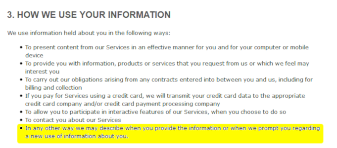
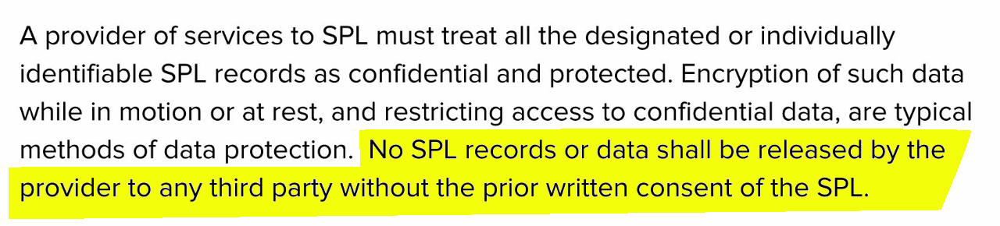

STANCH THE DATA BLEEDING
TENN-SHARE 2018 Bryan JonesNashville Public Library
DATA MININGWhat is it?


What's bad about it?
malware / phishing / doxing


What does this have to do with libraries?
crappy vendor contracts
public internet

public nets

more public nets

What can we do about it?
gnarly vendor contracts
install Tor Browser

install Privacy Badger

I love and respect my mom.
REFERENCES
Federal Trade Commission. (2014, September 17). Big Data: A Tool for Inclusion or Exclusion? Part 6.Retrieved September 18, 2018, from https://www.ftc.gov/news-events/audio-video/video/big-data-tool-inclusion-or-exclusion-part-6
Federal Trade Commission. (2017, December 12). Informational Injury - Panel 1: Injuries 101. Retrieved September 10, 2018, from https://www.ftc.gov/news-events/audio-video/video/informational-injury-panel-1-injuries-101
Gangadharan, S. P. (2012). Digital inclusion and data profiling. First Monday, 17(5). Retrieved from http://firstmonday.org/ojs/index.php/fm/article/view/3821
Goodin, D. (2016, March 15). Big-name sites hit by rash of malicious ads spreading crypto ransomware [Updated]. Retrieved September 9, 2018, from https://arstechnica.com/information-technology/2016/03/big-name-sites-hit-by-rash-of-malicious-ads-spreading-crypto-ransomware/
John, A.S. (2018, April 11). How Facebook Tracks You, Even When You’re Not on Facebook. Retrieved August 20, 2018, from https://www.consumerreports.org/privacy/how-facebook-tracks-you-even-when-youre-not-on-facebook/
REFERENCES cont.
Lynda.com. (2018, May 1). Lynda.com Privacy Policy. Retrieved August 20, 2018, from https://www.lynda.com/cms/162-2817?culture=en-US
Nguyen, N. (2018, August 30). Changing Our Approach to Anti-tracking. Retrieved September 12, 2018, from https://blog.mozilla.org/futurereleases/2018/08/30/changing-our-approach-to-anti-tracking
Veale, M. (2018, June 28). When pushed with the GDPR, @spotify gives you a huge amount of telemetry data from their app [Tweet]. Retrieved August 20, 2018, from https://twitter.com/mikarv/status/1012386696934182912
Verizon. (2018). 2018 Data Breach Investigations Report. 11th edition. Retrieved from https://www.verizonenterprise.com/resources/reports/rp_DBIR_2018_Report_en_xg.pdf
Yoose, B. (2018, April 11). Wrangling Library Patron Data. Webinar. Retrieved from https://ala.adobeconnect.com/pb88f3mvmgbb/?proto=true